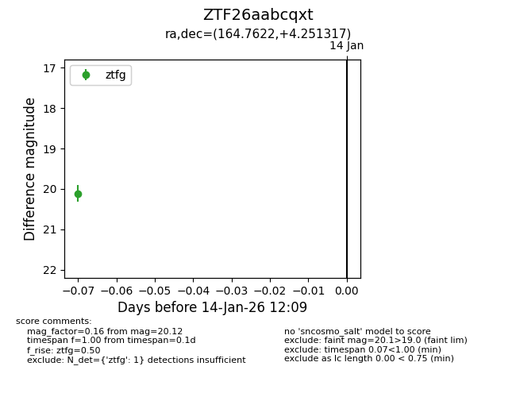
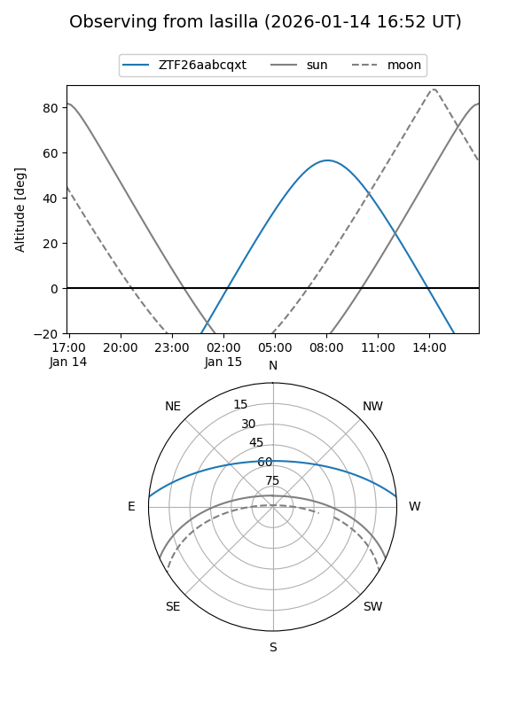
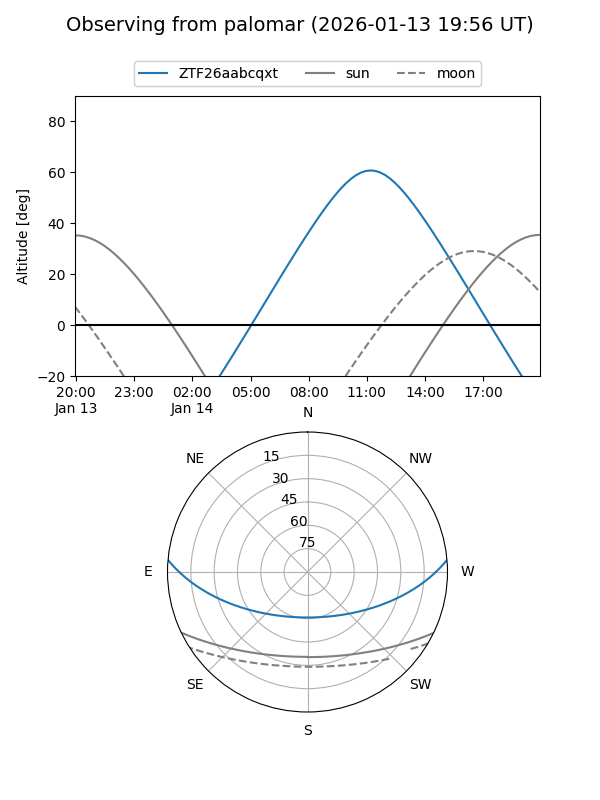

ZTF26aabcqxt
Target ZTF26aabcqxt at 2026-01-14 12:10
Aliases and brokers:
FINK: link
Lasair: link
ALeRCE: link
alt names
ZTF26aabcqxt (ztf,fink_ztf)
Coordinates:
equatorial (ra, dec) = 164.7622,+4.25132
equatorial (HMS+DMS) = 10:59:02.94,+04:15:04.74
galactic (l, b) = (248.4439,+54.76028)
Flags:
Photometry:
last ztfg=20.12
1 ztfg detections
Lightcurve

Visibility


Additional plots